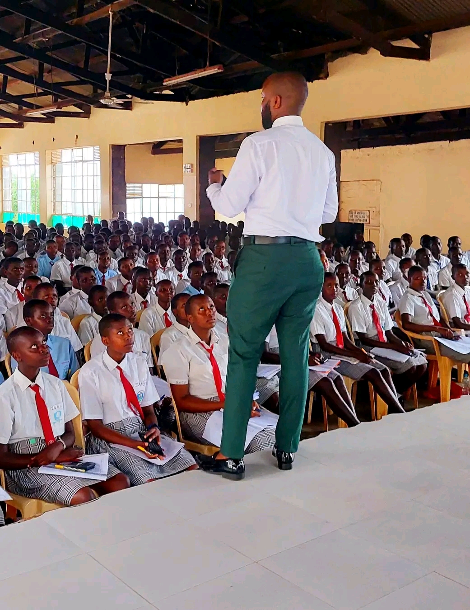

Sam Vidambu is the visionary Founding Director and CEO of Ambigen Ltd and the President of the Global Student Mentorship Center, a youth empowerment organization based in Nairobi. With a master’s degree in Project Management and professional credentials as a Trainer of Trainers in counselling supervision (KAPC), Sam is passionate about transforming young lives across Kenya.
His mission is to build outstanding individuals who positively impact society through mentorship. Sam’s academic mentorship programs have reached over 4,000 high schools in all 47 counties, equipping students with mindset, skillset, and culture geared towards success and achievement. Beyond academics, he coaches principals, teachers, and corporate leaders, helping them unlock potential and boost performance.
A multiple award winner, including the 2023 254 Youth Entrepreneurship Award in the Education Category, Sam was recognized among The Top 100 Most Influential Young Kenyans in 2022 for his relentless work in youth empowerment. His foundation supports hundreds of bright but needy students, funded through proceeds from his impactful academic programs.
As a part-time tutor of Entrepreneurship at Candid International College and a sought-after keynote speaker, Sam’s powerful presentations inspire and energize audiences, leaving a lasting impact. With over 2 million followers across his social platforms, he is not only a mentor but a movement.
Above all, Sam Vidambu is a believer and lover of God, committed to changing generations for the better.
Programs & Services
Academic Mentorship Programs
Schools Benefiting from Sam Vidambu’s Academic Mentorship Programs
Sam Vidambu’s mentorship initiatives have impacted thousands of students across Kenya, running in over 4,000 high schools nationwide. Some of the notable schools where his programs are actively implemented include:
Alliance Girls High School
Mang’u High School
Loreto Limuru
Moi High School Kabarak
Kenya High School
Kapsabet Boys High School
These programs focus on empowering students with the right mindset, skills, and culture to excel academically and develop strong leadership and entrepreneurial capabilities.
Custom-designed programs aimed at improving student academic performance through mindset coaching, study skills, time management, and culture building.
Impacting over 4,000 high schools nationwide, including prestigious schools such as Alliance Girls, Mang’u School, and Kenya High.
Student-centered, results-oriented, and performance-focused.
Teacher & Principal Training
Capacity building workshops to empower educators and school leaders to foster environments of excellence and collaboration.
Topics include leadership development, classroom management, and effective communication.
Youth Empowerment & Scholarship Support
Through the Sam Vidambu Foundation and Global Student Mentorship Center, providing scholarships and resources to needy but talented students.
Empowering young people with entrepreneurship skills via partnerships with Wings To Fly (Equity Bank) and Blaze Be Your Own Boss (Safaricom).
Corporate Coaching & Keynote Speaking
Executive coaching tailored to CEOs, corporate boards, and business leaders to enhance productivity and leadership.
Dynamic keynote presentations that motivate, shift mindsets, and energize audiences at conferences and summits.
Known for a high-energy style and authentic connection with diverse audiences.
Achievements
2023 (+254) Youth Entrepreneurship Awards – Winner in the Education Category for impactful youth programs.
Top 100 Most Influential Young Kenyans (2022) – Recognized for transformative mentorship work.
Keynote Speaker – Featured at major international events including The African Youth SDG Summit (2019, Ghana) and World Education Conference (2021, South Africa).
Media Features – Guest on Jeff Koinange Live (Citizen TV), Morning Cafe (TV47), and a widely-followed TikTok personality with 2 million+ followers.
Published Writer – Contributor to Business Today and AowaPress24 on entrepreneurship and youth empowerment.
Social Media: Engaging millions through TikTok, Facebook, Instagram, and Threads with inspirational content.
Blogs
HOW TO PASS MATHEMATICS IN HIGH SCHOOL.
By Mr VIDAMBU Sam.
Maths, Maths, Maths. This is the most famous subject in high school.
Mathematics is a unique subject because it is the only one which students’ expression in terms of answering questions is not done in words, but figures.
Mathematics is also an ‘abnormal’ subject because it is the only subject that will garner students from A to E. In any Mathematics exam, be it opener, a RAT, mid term, end term or even KCSE, you will always find students distributed from A to E.
If you are a DOS, a principal or a teacher of that big national school boardering Thika Road or that small dayschool 75 kilometres from any recognisable road, if you look at the subject performance in the mock exam which form fours did recently, I am sure Mathematics was either last or second last.
What is the issue with Mathematics? Why is Mathematics a cancer to the academic life of our students?
Entirely, in totality. It is not an attitude problem. It is an approach problem. Students don’t know how to approach Mathematics.
Two weeks ago, I got a WhatsApp message from a teacher who has been enrolled to TSC 18 months ago. This is what she said, ‘Hi Mr Vidambu, My name is Miss Wainaina, I was absorbed in TSC 18 months ago. My combination is Maths/Chem. I teach in a small school in Nyeri County. Mr Vidambu, I am a demotivated teacher. Last year our Maths mean score in KCSE was 1.5 and Chemistry was 1.7. The school mean was 2.3. Since the school began, the best score of Maths has been 2.8 which was achieved in 2015. Mr Vidambu, I understand that in career progression they consider subject performance and school performance. Will I be a classroom teacher forever?’
My answer was this, ‘Do your best, let God do the rest’.
The moment a teacher gives up, he is killing generations and generations. When you look at a student as a failure, he will always be a failure. When you consider a student as upcoming, he will come up. Even if you know a student is weak, keep telling them that you believe they have hidden academic potential.
Here is a workable practical tried tested proven Mathematics program to help your school improve in Mathematics. Take notes:
Mathematics needs attention. During lunch hour, 30 minutes should be created for Mathematics. I understand most schools have Maths hour, but they just do it for the sake of doing it. It’s never serious.
This is a program called ‘Befriending Maths’. In this program, in five days in a week, from Monday to Friday, students should spare 30 minutes for Mathematics. From Monday to Thursday, within those 30 minutes, the students are given 4 topical questions to attempt to answer per topic. On Friday, it is general testing.
Let me explain here using examples.
On Monday, between 1:30PM and 2PM, the teacher gives four questions from ‘Quadratic expressions and equations 2’. On Tuesday, between 1:30PM and 2PM, the teacher gives four questions from ‘Approximation and errors’. On Wednesday, between 1:30PM and 2PM, the teacher gives four questions from ‘Trigonometry 2’. On Thursday, between 1:30PM and 2PM, the teacher gives four questions from ‘Surds’.
The four questions should add up to 30 marks.
Before I talk about Friday, I want to say this, these questions are just given by the teacher to the students. The students should start looking for answers as soon as the teacher has given them. They can discuss, they can do it personally, they can consult from the teachers. But the questions will not be marked.
Now, the big day is Friday. Its a special day, a serious day. On this day, the teacher picks one question from each day and then brings for assessment on Friday. So on Friday, out of the 4 questions he gave from Quadratic expressions and equations 2, he picks one. Then on Tuesday he picks one. On Wednesday, he picks one. On Thursday, he picks one. Remember, from Monday to Thursday, he gave them 16 questions to look for answers. But now on Friday, he gives 4 out of the 16.
He then compiles those four questions and brings them like a serious exam. No copying. No discussion. No group work. No consultation. The time for all that was between Monday and Thursday. The Friday 4 questions also add up to 30 marks. Remember, the questions given on Friday are just among the ones which were given between Monday and Thursday.
The questions are done on Friday from 1:30PM to 2PM. They are then marked over the weekend. Results are tabulated and handed to the principal on Monday evening. On Tuesday morning, the ones who get 30 out of 30 are rewarded. The ones who get less than 15 are given two options, either to ‘work’ in the field or given another chance to do the same questions and get 30 out of 30.
The program is done every weekday. Consistency is key. Numbers need patience. Success is not a one day affair.
10 Reasons Why This Program Is Good:
Increases content retention in Mathematics because they are doing same questions again and again.
Increases consultation because students will want to know the answers because they won’t know which questions will be retested on Friday.
It is sustainable.
It is specific.
It is objective.
Improves classroom-staffroom interconnection.
Keeps Mathematics close.
It is progressive and continuous.
Helps students to learn how to answer one mark within one minute.
It is topical.
Mwalimu, don’t focus on entry behaviour, focus on value addition. You teach Mathematics because you passed Mathematics. Winners make winners.
Do something different. This is different.
{You can forward this information to others but without editing and putting your name. This information has been copy righted under Sam Vidambu, any form of plagiarism or data manipulation will be regarded as an offence}.
To God Be The Glory. By Mr Sam VIDAMBU (0743480435).

BOUNDARIES IN RELATIONSHIPS.
By Mr Sam VIDAMBU.
Marriage. Marriage. Marriage. What is marriage? Is it just something that you wake up in the morning and say, 'I want to marry' or 'I want to be married?' Must you go for marriage seminars or dating classes to have a better marriage? How long should courtship last? Should you consider region or race? Sincerely, marriage needs to be understood. It is not easy staying for over 60 years with someone who you never knew for the first 30 years of your life. It needs a lot of courage and adjustments.
One of the biggest lies is 'I love you' and 'I love you too' because one person is just after bedroom satisfaction while another is seeking financial assistance. A honest discussion is necessary. It is true someone should love the other because of who they are and not what they have. But nowadays it is not the case. You are your mother's favourite son because you have the most money, you are the most loved cousin because during fundraising you contribute the highest amount of money, your boyfriend loves you because your face is not pimply and the shape is not bad, your girlfriend is with you because of that business investment in Thika and that BMW X5 in the parking lot.
Before getting married try asking your partner this one question, 'If we get married what will you bring on the table?' If they tell you that they will bring love, affection and understanding then that is a wrong potential partner. If they say that they are the ones who will bring the table itself then that is a marriage material. Marry them.
Before marrying, discuss the following things with your partner:
Money and finances.
Property and assets.
Business and investments.
Conflict resolution.
The in-laws.
Religion.
Power in the marriage.
Parenting.
Boundaries in marriage.
Work-Family balance.
Medical tests.
Family genetic history.
We have more divorce papers than marriage certificates in the court rooms. The person you get married to will determine your financial situation, spiritual position and anger levels in the next ten years. Choose wisely.
Remember, marriage is an institution. Not a joke.
{You can forward this information to others but without editing and putting your name. This information has been copy righted under Sam Vidambu, any form of plagiarism or data manipulation will be regarded as an offence}.
To God Be The Glory. By Mr Sam VIDAMBU (0743480435).
view all blogs
Contact
Have an idea or dream? Get in touch to start your free consultation and make it happen.